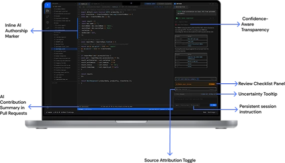
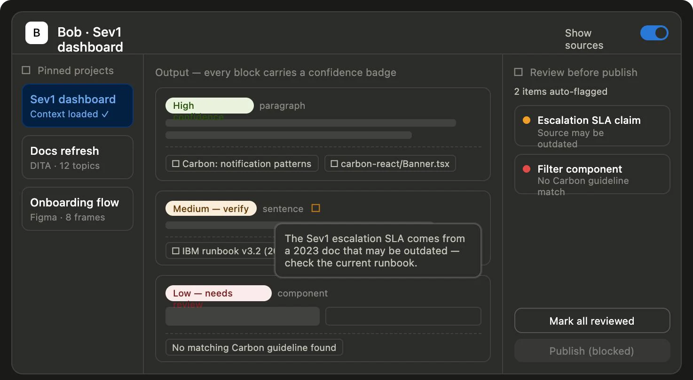
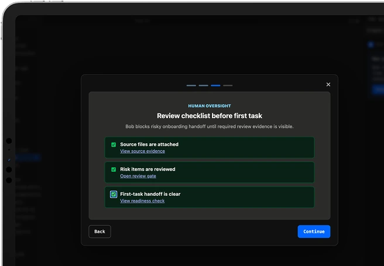
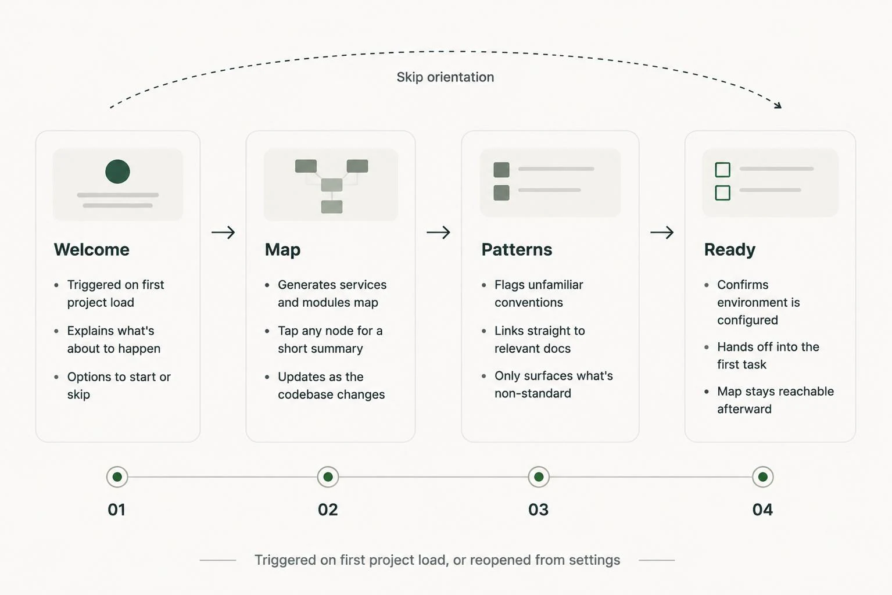

IBM · UX Research
Making an enterprise AI coding agent understandable.
- Problem
- Teams knew the agent hallucinated, varied between runs and hid its reasoning, but had no design language for any of it.
- My role
- Ran and analysed the interviews with UX designers, developers and content designers, as researcher and designer.
- Result
- Three reusable frameworks for designing around an AI agent that isn't always right, built from themes found in all three disciplines.

Turning AI's rough edges into problems design can work on.
AI coding agents can plan and write code across a whole repository, but they don't always behave the same way twice. They can state a guess as fact, give different plans for the same prompt, and keep their reasoning hidden. In enterprise teams, those rough edges decide whether people trust the tool or quietly stop using it.
For my MSc HCI capstone at UCD, in partnership with IBM, I looked at how the people who build these products experience those failure modes, and how design could respond to them.
Known problems with no design language.
Teams already knew the agent hallucinated, varied between runs and hid its reasoning. Those issues were usually treated as model-quality problems for engineering, not as experience problems design could shape. That left designers without shared vocabulary or patterns for when the agent was uncertain, inconsistent or opaque.
Listening across three disciplines.
I ran semi-structured interviews with UX designers, developers and content designers. Each group meets the agent at a different point: designers shape the experience, developers depend on the output, and content designers write the words that explain it.
I coded the transcripts with thematic analysis, mapped the themes into a SWOT, and then turned the strongest tensions into evidence-based How Might We statements to explore in workshops with IBM UX.
Separating what users struggle with from what the model does.
The analysis kept user problems apart from model behaviour, so each theme could become a direction specific enough to prototype.
Thematic analysis
Four themes came up across all three disciplines. Each one became a How Might We statement for the workshops with IBM UX.
Hallucination
Non-determinism
Opacity
Trust
From themes to features
Each theme went through the same three steps: anchor it to what participants said, split it into specific moments, then test every feature against a precise complaint before it reached the workshop.
From Themes to Features: The Design Process
Each feature set was derived through a structured process:
-
Anchor in theme
Confidence-Aware Transparency and AI-Generated Code Attribution both trace to Human Oversight Safeguards Enterprise Trust (PS2, PS11); Agentic Reasoning Transparency traces to the same theme but targets AI’s process rather than its output; Contextual Onboarding Assistant traces to AI as an Enterprise Knowledge Partner (PS1, PS9).
-
Decompose
Each HMW split into the specific moments a pain point surfaces like Confidence-Aware Transparency alone became four features (confidence badge, source attribution toggle, review checklist panel, honest refusal state) rather than one generic “trust indicator,” each mapped to a pattern enterprise users already recognise (a gutter mark and PR summary, borrowed from version control, for AI-Generated Code Attribution).
-
Stress Test
Every feature was checked against a specific precise complaint like the Tiered Permission Dial answers PS2’s “nothing touches production without going through a human in the loop” then prioritised into core versus secondary before being validated with IBM stakeholders in the Workshop.
Step 1 of 3
Three frameworks any team can reuse.
I didn't design one-off screens. I turned the HMWs into three frameworks that any team building on the agent can apply. Each one makes the agent's behaviour easier to read without asking users to understand the model underneath.
Confidence scoring
Every suggestion shows how sure the agent is and what that rating is based on, so people know where to look closely.
Suggestions Sorted by confidence ↓

The same pattern in the prototype: a badge on every block, a source note on hover, and publishing blocked until flagged items are reviewed.
Agentic transparency layer
The agent's steps can be opened when someone wants to know why it acted, and stay out of the way when they don't.
Why the agent did this
- Read the issue“Login fails after token expiry”
- Searched the codebaseFound 3 call sites for refreshToken()
- Considered 2 approachesChose retry with backoff over a silent refresh
- Waiting for your approvalDiff ready · 2 files
Contextual onboarding assistant
A first-run assistant that orients someone inside a new codebase: a short welcome, a map of services and modules, the patterns that differ from convention, and a readiness check before the first task. It can be skipped at any point.

Language and IDE: Python and VS Code. Framework: Vanilla JS, bundled with Next.js. Hosted via OpenAI Sites.

First-run flow: orientation, a codebase map, key patterns and setup steps, which can be skipped at any point.
Designing for a system that isn't always right.
Most interfaces assume the system is correct. AI agents break that assumption, so the design job moves from hiding complexity to showing the right amount of it at the right moment: how confident the agent is, why it acted, and what the user should check.
Talking to three disciplines was what made the difference. Developers, designers and content designers described the same failures in different words. Mapping those differences is what turned vague worries about AI trust into frameworks a team can build and test.